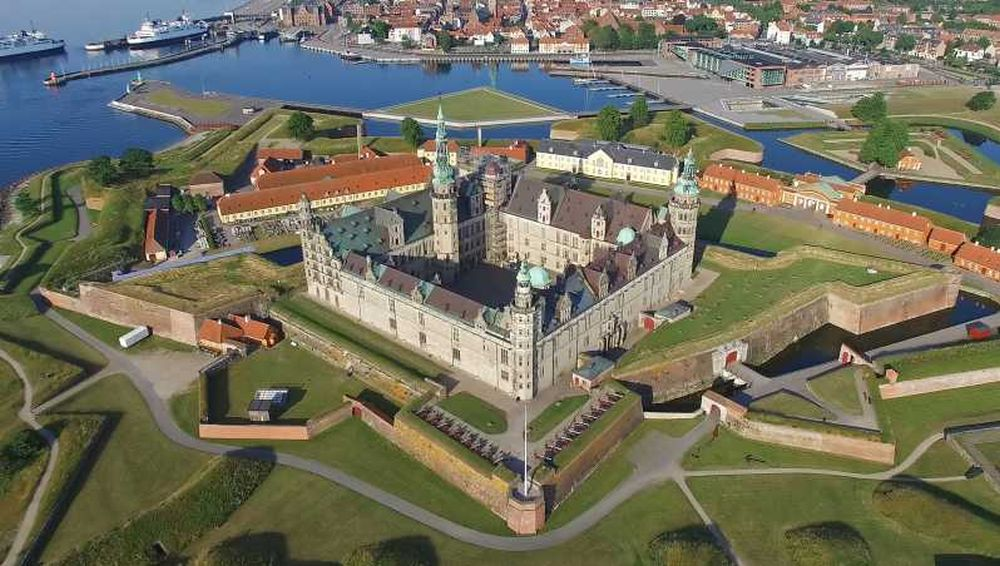

Descoperă Helsingør - O călătorie în Danemarca
Helsingør este un oraș plin de istorie situat în Danemarca, oferind o varietate de atracții interesante pentru vizitatori:
-

Castelul Kronborg din Helsingør - Loc istoric
Vizitați celebrul castel Kronborg, cunoscut și sub numele de "Elsinore", din piesa lui Shakespeare "Hamlet".
-

Muzeul Maritim din Helsingør - Istorie navală
Explorați istoria maritimă a regiunii prin colecții captivante de artefacte și exponate.
-

Biserica St. Mary din Helsingør - Arhitectură sacrală
Vizitați această biserică gotică remarcabilă, care datează din secolul al XIII-lea.
-

CulturYard în Helsingør - Centru cultural
Explorați acest spațiu cultural care găzduiește evenimente, expoziții și spectacole artistice variate.
-

Statuia lui Hamlet în Helsingør - Omagiu literar
Descoperiți statuia lui Hamlet din apropierea castelului Kronborg, un omagiu adus celebrei opere literare.
Concluzii
Helsingør oferă o incursiune captivantă în istorie și cultură, cu atractii ce amintesc de personaje literare celebre.